Immersive Portfolio Interface
Sai Kiran Patnana Designing intelligent systems with cinematic energy and practical purpose.
A portfolio shaped by AI, driven by curiosity, and built to feel alive. I work across Data Science, Machine Learning, Deep Learning, Computer Vision, NLP, and Generative AI with a strong focus on impactful systems and elegant presentation.
Live Build
AI Systems Portfolio
Sai Kiran Patnana
AI Developer • GenAI • ML • Vision • NLP
Click the portrait to view larger.
Current Mission
Transform learning into signature projects.
Generative AI, RAG, workflow automation, and polished project storytelling.
An immersive visual interface built to showcase AI work with style, motion, and clarity.
Data Science
Machine Learning
Deep Learning
Computer Vision
NLP
Generative AI
AI Systems
RAG
AI Agents
About Me
Building experiences where intelligence feels purposeful, modern, and memorable.
I am an AI-focused builder who enjoys taking ideas from raw curiosity to working systems. What excites me most is the spectrum of intelligence itself: the power to learn from data, understand language, perceive images, and generate something new and useful.
This portfolio is designed to project not only what I build, but how I think. I care about technical depth, strong execution, and the craft of presenting work in a way that feels elevated and intentional.
Core Signals
The energy behind my work.
Analytical Depth
Strong foundations in data, patterns, and model thinking.
Creative Engineering
Combining logic, aesthetics, and interaction to make work stand out.
Modern AI Curiosity
Exploring LLMs, RAG, agents, and the systems shaping the future.
Domains
The disciplines I build across.
Data Science
Insights, patterns, analytics, storytelling, and decision support.
Machine Learning
Classification, regression, predictive systems, and intelligent workflows.
Deep Learning
Neural architectures, richer representations, and advanced model behavior.
Computer Vision
Image understanding, detection, recognition, and visual intelligence.
Natural Language Processing
Language-aware systems, text understanding, and human-centric AI.
Generative AI
LLMs, RAG, prompt design, AI assistants, and emerging intelligent products.
Project Space
Projects, organized with intent.
Generative AI
Systems built around RAG, assistants, and agentic workflows.
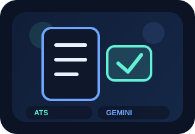
ATSAI UtilityGenAI
ATS
ATS-style evaluation workflow with a practical AI utility focus.
PythonWorkflowLLM
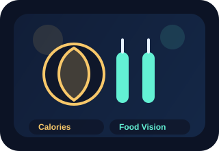
VisionNutritionGenAI
Calorie Calc Using GPV
AI-assisted food understanding and calorie estimation concept.
PythonVisionPrompting
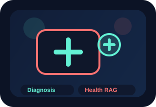
HealthcareRAGGenAI
Disease Diagnosis Dhanvantari
Knowledge-grounded healthcare assistance and diagnosis support exploration.
RAGHealthcareNotebooks
EdTechContent
GenAI
HYBD CMR EdTech
Educational content generation backed by retrieved academic context.
FlaskRAGEdTech
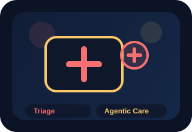
AgentsMedicalGenAI
Med Triage Agentic AI
Agentic medical triage flow with conversational guidance concepts.
AgentsGroqTriage
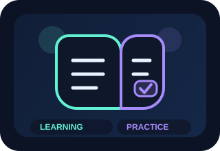
PDF ChatMCQGenAI
Sadhana GenAI Project
PDF chat, Q&A, and MCQ-driven GenAI learning workflows.
StreamlitQ&AMCQ
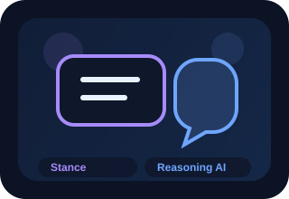
ReasoningStanceGenAI
Stance Detection
LLM-assisted stance analysis and collaborative reasoning experimentation.
LLMsAnalysisResearch
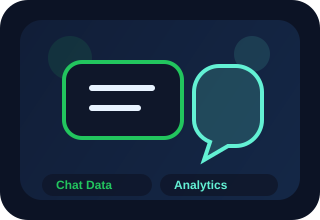
ChatsInsightsGenAI
WhatsApp Chat Analyser
Conversational analytics and insight generation from chat data.
PythonAnalyticsStreamlit
Machine Learning
Prediction systems, analytics workflows, and practical ML applications.
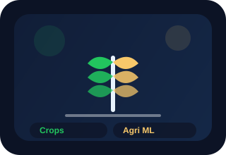
Agri MLClassificationML
Crop Recommendation
Feature-driven recommendation system for agriculture scenarios.
PythonClassificationAgriculture
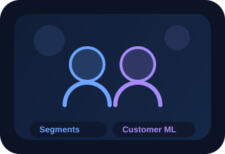
ClusteringMLOpsML
Customer Segmentation
Clustering workflow with a deployment-oriented ML structure.
ClusteringMLOpsAnalytics
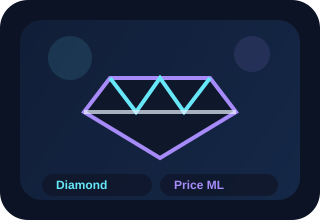
RegressionPricingML
Diamond Price Prediction
Regression-based value estimation using structured data features.
RegressionPandasPrediction
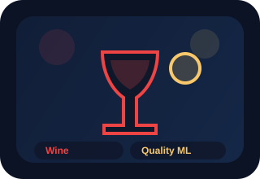
QualityPipelineML
Red Wine Quality
End-to-end quality prediction built around structured wine data.
PipelineClassificationData
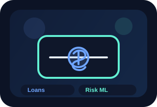
FinanceApprovalML
Rural Loan Approval
Decision-support workflow for loan approval prediction.
RiskPredictionFinance
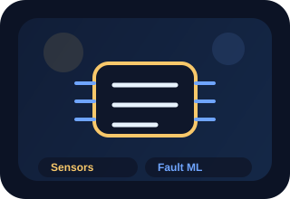
IndustryFaultsML
Sensor Fault Detection
Predictive fault analysis for industrial monitoring contexts.
IndustrialFaultsPrediction
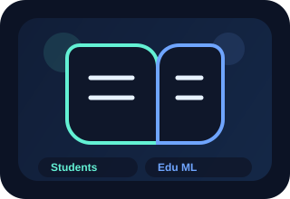
EducationPredictionML
Student Performance Prediction
Educational outcome prediction built from structured learning data.
EducationPredictionAnalytics
Deep Learning
Neural models across classification, detection, audio, and recognition.
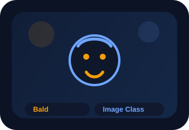
CNNImageDL
Bald Classification
Image classification workflow using deep learning.
CNNsClassificationImages
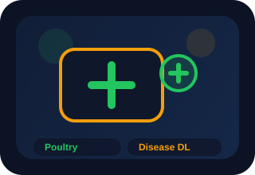
DiseaseVisionDL
Chicken Disease Classification
Disease detection from visual inputs using deep learning.
CNNsDiseaseVision
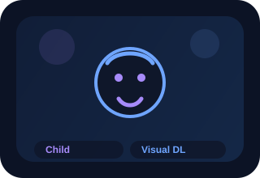
ImagesLabelsDL
Child Classification
Supervised deep learning classification with image inputs.
Deep LearningImagesLabels
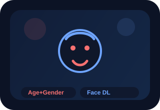
FacesAttributesDL
Gender Age Detector
Face-based deep learning model for age and gender estimation.
VisionFacesPrediction
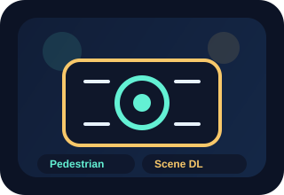
DetectionScenesDL
Pedestrian Detection
Detection workflow for pedestrians in visual scenes.
DetectionVisionScenes
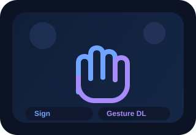
GesturesRecognitionDL
Sign Language Recognition
Gesture-based recognition workflow for sign interpretation.
GesturesVisionDL
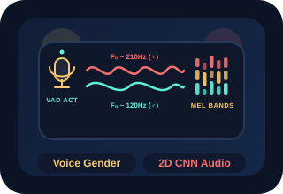
AudioSpeechDL
Voice Based Gender Detection
Audio classification workflow using speech-based features.
AudioSpeechClassification
Computer Vision
Visual intelligence projects across detection, recognition, and enhancement.
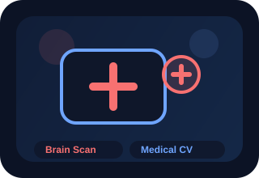
MedicalVisionCV
Brain Tumor Detection
Medical image understanding and tumor-focused visual analysis.
MedicalDetectionVision
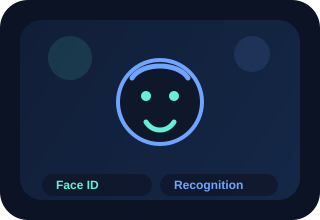
FacesRecognitionCV
Face Recognition
Identity recognition workflow using facial visual features.
RecognitionFacesVision
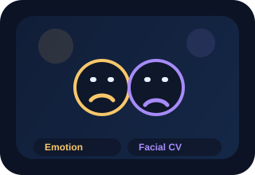
EmotionFacesCV
Facial Emotion Detection
Expression analysis and emotion-aware visual classification.
EmotionFacesClassification
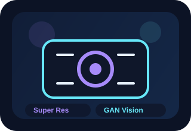
GANsEnhancementCV
Image Super Resolution GANs
Image enhancement and super-resolution using GAN-based approaches.
GANsSRGANESRGAN
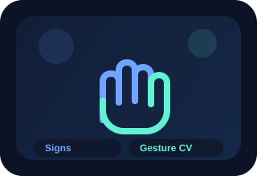
SignsGesturesCV
Sign Language Detection
Gesture interpretation and sign-based visual intelligence.
GesturesDetectionVision
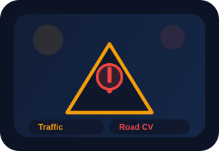
RoadSignsCV
Traffic Sign Detection
Road-scene sign recognition and detection workflow.
Road VisionDetectionRecognition
Natural Language Processing
Language understanding projects around sentiment, spam, and recommendations.
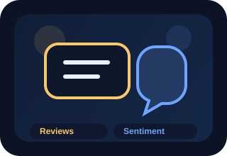
SentimentReviewsNLP
IMDB Sentiment Analysis
Opinion classification using movie review text.
NLPSentimentClassification
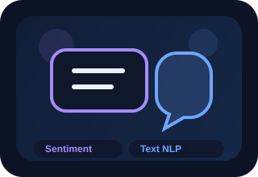
TextPolarityNLP
Sentiment Analysis NLP
Text polarity analysis and NLP workflow experimentation.
TextSentimentNLP
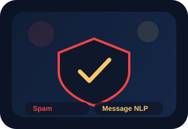
SpamMessagesNLP
Spam Message Classifier
Message filtering and spam classification pipeline.
SpamTextClassifier
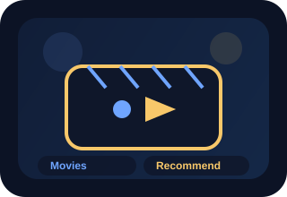
RecommendMoviesNLP
TMDB Movie Recommendation
Content-based recommendation workflow for movie discovery.
RecommendationSimilarityTMDB
Python Projects
Assistants, bots, and utility-focused automation experiments.
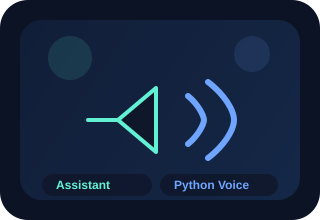
AssistantPythonPython
Python Virtual Assistant
Assistant-style automation built with Python.
PythonAssistantAutomation
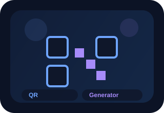
UtilityQRPython
QR Code Generator
Lightweight Python tool for QR code generation.
PythonUtilityQR
BotTelegram
Python
Telegram Bot
Chat automation and bot-based interaction flow.
BotTelegramPython
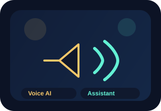
VoiceAssistantPython
Virtual Voice Assistant
Voice-enabled assistant workflow and automation experiments.
VoiceAssistantPython
Resume
A clean professional snapshot, ready to share and download.
This section gives your portfolio a direct career-facing touchpoint. For now it includes a polished placeholder resume download, and later we can replace it with your final PDF version without changing the layout.
AI Developer Profile
Sai Kiran Patnana
- Data Science, ML, DL, CV, NLP, GenAI
- Strong project-based learning mindset
- Focused on impactful AI systems and polished presentation
Journey Logic
How I want my work to be seen.
Learn with Intent
Go beyond surface-level tutorials and turn learning into systems.
Build with Craft
Create projects that feel both technically sound and visually intentional.
Present with Confidence
Showcase ideas in a way that communicates depth, style, and ambition.
Connect
Let’s turn this into a signature portfolio over the next few days.
We can now keep upgrading this with your real repositories, screenshots, project summaries, links, and a polished publishing setup.